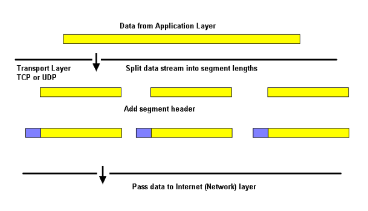
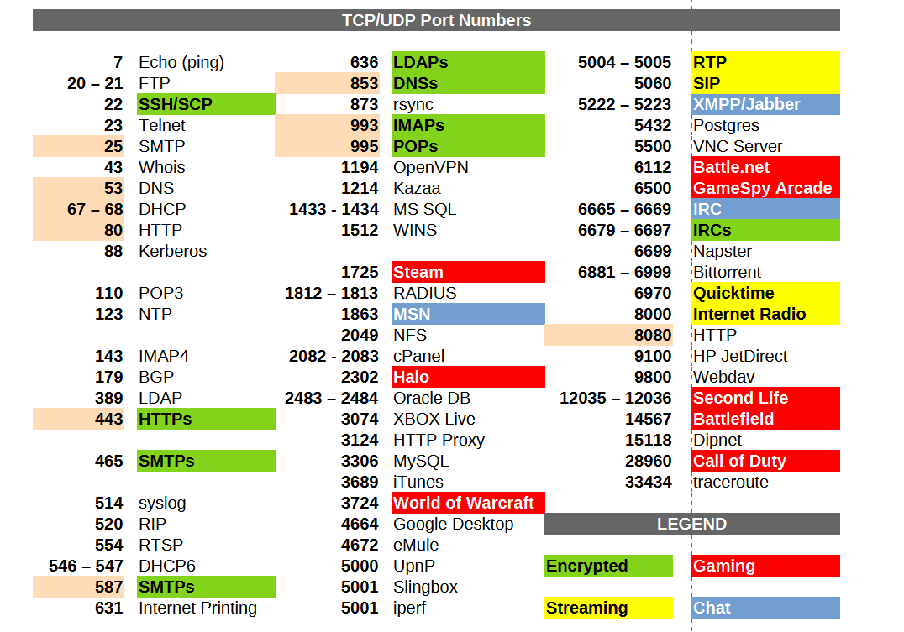
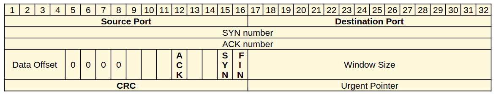
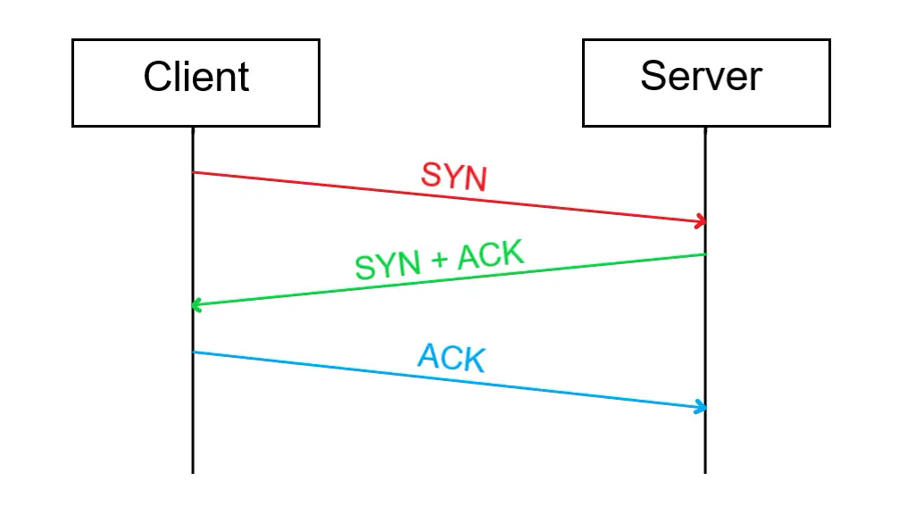
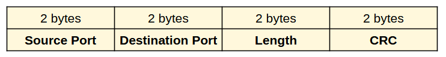

Suite Internet: Livello di Trasporto
Il livello di trasporto gestisce la conversazione tra mittente e destinatario, nascondendo tutti i dettagli relativi al trasporto delle informazioni lungo la rete.
I compiti del livello si possono inizialmente riassumere come nel disegno sottostante: prende i dati dal livello applicazione, li divide in pacchetti, vi aggiunge un'intestazione e li passa al sottostante livello di rete.

La Suite Internet offre a livello di trasporto due protocolli:
- TCP (Transmission Control Protocol) connesso e affidabile
- UDP (User Datagram Protocol) non connesso e non affidabile
A livello di trasporto, i termini connessione e affidabilità significano:
-
connessione:
Un servizio si dice connesso (a livello di trasporto) quando si preoccupa di stabilire una comunicazione con il destinatario preventiva all'invio reale dei dati.
-
Affidabilità:
Un servizio si dice affidabile (a livello di trasporto) quando si preoccupa di rinviare al destinatario ogni pacchetto che non gli è arrivato (o che gli è arrivato corrotto).
Un servizio di trasporto connesso e affidabile si preoccupa di stabilire una comunicazione preventiva con il destinatario. Se questi è disponibile, invia i pacchetti numerandoli alla partenza e riordinandoli all'arrivo; in caso di pacchetti corrotti o mancanti si preoccupa di richiedere al mittente un nuovo invio di dati, assicurando un arrivo completo degli stessi, oppure una dichiarata impossibilità a ricevere i dati.
Un servizio di trasporto non connesso e non affidabile inizia subito l'invio dei pacchetti nell'ordine in cui essi sono arrivati dal livello precedente. All'arrivo scarta semplicemente i pacchetti corrotti, senza richiedere alcun reinvio, toglie l'intestazione del livello di trasporto e passa il dato al livello superiore.
Perché due protocolli?
TCP è connesso e affidabile.
Alcune applicazioni, come ad esempio quelle per inviare mail o files, hanno bisogno di essere sicure che i loro dati arrivino tutti a destinazione e possono accettare piccoli rallentamenti nel trasporto.
Queste applicazioni scelgono TCP.
UDP è non connesso e non affidabile.
Alcune applicazioni, ad esempio quelle di video e audio streaming, gestiscono i dati in maniera che anche con piccoli "buchi" o "errori" essi siano fruibili; preferiscono "scartare" alcune parti del dato pur di proseguire nella trasmissione e non necessitano di un riordinamento.
Queste applicazioni scelgono UDP.
Sockets e Porte
Il protocollo di trasporto per suddividere il traffico in entrata e uscita fra le varie applicazioni che ne richiedono utilizza il meccanismo delle porte logiche.
Le porte sono il mezzo essenziale che permette ai protocolli di trasporto di gestire flussi multipli di dati attraverso una unica connessione fisica alla rete.
Per fare un paragone con la vita reale immaginiamo di spedire una lettera ad un amico. Se il destinatario vivesse in una abitazione indipendente e ne fosse l'unico inquilino, sulla busta sarebbe sufficiente indicare il suo indirizzo.
Questa situazione è però piuttosto inusuale in quanto, più probabilmente, egli vivrà in un palazzo con altri condomini oppure condividerà l'abitazione con altri parenti. Ognuno di questi può ricevere posta al medesimo indirizzo e quindi per individuare univocamente il destinatario sarà necessario specificare anche il suo nome completo. Allo stesso modo indicheremo sulla busta le informazioni riguardanti il mittente per poter ricevere una risposta.
Una cosa analoga avviene per le comunicazioni in rete attraverso la suite TCP/IP. Ogni macchina sarà individuata sulla rete da un indirizzo IP ma poiché molteplici possono essere i servizi offerti dal sistema e molte le connessioni contemporanee, è necessario un metodo per separare i singoli flussi di dati ed indirizzarli verso il corretto programma di gestione.
A chi non è capitato per esempio di navigare e contemporaneamente di scaricare la posta elettronica o usare un programma p2p? Come fa il sistema a riconoscere a chi sono diretti i dati in arrivo?
Il problema viene risolto attraverso il meccanismo delle porte logiche, nel confronto con l'esempio precedente, fanno le veci del nome del nome del mittente e del destinatario.
Flussi di dati distinti diretti verso la stessa macchina sono caratterizzati da porte diverse.
Una connessione tra due dispositivi, a livello di trasporto, viene univocamente identificata dalle coppie:
- "indirizzo IP : porta" del mittente
- "indirizzo IP : porta" del destinatario
Ognuna delle coppie "indirizzo IP: porta" rappresenta i dati identificativi di un socket, un oggetto software creato dal livello di trasporto per identificare un dispositivo di rete.
Per identificare una connessione abbiamo dunque bisogno di 2 socket (per individuare il punto di partenza e il punto di arrivo) allo stesso modo in cui tramite due punti nel piano identifichiamo un segmento.
I protocolli del livello di trasporto utilizzano un identificatore a 16 bit (numeri da 0 a 65535), quindi questo rende possibili (teoricamente) fino a 65536 socket contemporaneamente attivi per ogni porta fisica di ogni dispositivo.
In linea di principio i numeri di porta per identificare un socket potrebbero essere scelti arbitrariamente durante la connessione ma, come vedremo, la cosa si rivelerebbe decisamente poco pratica.
Ogni comunicazione sulla rete presume che inizialmente, in una dei due dispositivi coinvolti, ci sia un software "in ascolto", in attesa di un contatto dall'esterno: un server.
Ad un certo punto un software in esecuzione sul secondo dispositivo tenta di connettersi al primo: il client.
Se un dispositivo collegato ad un rete desidera comunicare con un altro sistema deve necessariamente sapere l'indirizzo completo della macchina remota. In questo caso quindi il client deve essere a conoscenza sia dell'IP sia della porta su cui il server si aspetta di ricevere i dati relativi al servizio di interesse.
Se il server scegliesse la porta in modo casuale nessuno saprebbe come raggiungerlo.
Per questo motivo nasce l'esigenza di standardizzare e rendere pubblici i numeri di porta relativi ai più comuni servizi disponibili (server) su internet e sulle reti in genere.
In questo modo un client che volesse accedere ad un qualsiasi server HTTP saprebbe a priori di doversi collegare alla porta TCP numero 80. Un server di posta SMTP sarà sempre raggiungibile sulla sua porta TCP 25 così come un server FTP userà la TCP 21 e un DNS la porta UDP 53.
Contrariamente al caso precedente il client non ha mai l'esigenza di rendere pubblico il suo indirizzo completo prima della connessione perché questo verrà automaticamente comunicato al server nel momento in cui verrà contattato.
In questo caso quindi il numero di porta del client può essere scelto arbitrariamente dal sistema tra quelli al momento disponibili.
L'Internet Assigned Numbers Authority (IANA) è l'ente che ha tra i suoi scopi la standardizzazione delle porte e l'aggiornamento costante di un documento, chiamato ports-number, contenente l'elenco dei servizi registrati e delle relative porte utilizzate. A questo scopo, nel suddetto documento, lo spazio delle 65536 porte UDP e TCP è stato suddiviso in tre parti:
-
Porte Note (da 0 a 1023)
L'accesso a queste porte è riservato a servizi con privilegi amministrativi.
Tipicamente ogni protocollo del livello superiore ha la sua porta più conosciuta (quella del server) in questo gruppo. -
Porte Registrate (da 1024 a 49151)
L'accesso a queste porte è libero per l'utilizzo da parte di chiunque.
Di solito, ogni protocollo del livello superiore ha una porta per il server in questo gruppo, in modo che chiunque possa eseguire un server senza privilegi amministrativi, ad esempio per motivi di test, di sviluppo, etc.Vi sono inoltre registrati tutti quei servizi che non necessitano di privilegi amministrativi, come i servizi p2p o i servizi di condivisione utente per file e stampanti.
Ultima tipologia di porte registrate in questa area sono quei client di cui, per necessità del protocollo, è necessario conoscere a priori la porta utilizzata.
-
Porte Dinamiche (da 49152 a 65535)
L'accesso a queste porte è libero per l'utilizzo da parte di chiunque e nessuna di esse può essere registrata per uno scopo particolare.
In questo gruppo tipicamente i client scelgono la loro porta da utilizzare per il socket necessario alla connessione. Nell'improbabile caso della saturazione di questo gruppo sono comunque utilizzabili anche le porte del secondo gruppo rimaste libere.
L'elenco completo delle porte assegnate può essere reperito nel documento pubblicato da IANA al seguente indirizzo web (http://www.iana.org/assignments/port-numbers).
Nella tabella seguente elenco le porte utilizzate dai protocolli più comuni.
Ovviamente dovrete impararle tutte!

Il protocollo TCP
Il protocollo TCP è senza dubbio il principale protocollo che implementa il livello di trasporto nella suite Internet. È stato definito per la prima volta nel 1981 tramite il documento RFC 793, che ha subito successivamente numerosi aggiornamenti.
Esso fornisce un metodo per garantire una consegna sicura e ordinata delle informazioni, utilizzando metodi connessi e affidabili e stabilendo connessioni punto a punto fra mittente e destinatario. Questo implica dunque anche l'impossibilità di supportare broadcasting e multicasting (tecniche di trasmissione "multipla" a livello di rete).
TCP riceve un flusso di dati da una applicazione e lo divide in TPDU grandi solitamente 1500 byte, ma comunque non più di 64 Kb e li passa poi al livello di rete, di cui utilizza sempre il protocollo IP.
L'intestazione del pacchetto TCP è di 20 byte, organizzati nel modo seguente:

Dove specifichiamo i campi più importanti:
- la porta mittente e destinatario sono le porte logiche TCP del mittente e del destinatario
- Gli 8 flag (bit) di stato servono per indicare informazioni come i pacchetti SYN, ACK, FIN.
- Il CRC (cyclic redundancy check) serve a verificare se il pacchetto è corrotto oppure no.
Three way handshake
Il protocollo TCP, per stabilire una connessione utilizza il metodo "three way handshake", ideato per assicurare al mittente la presenza e la raggiungibilità del destinatario prima di iniziare l'invio vero e proprio dei dati.

Passo 1
Il client invia una richiesta di connessione in un pacchetto denominato SYN, contenente un identificativo A.
Passo 2
Se il server riceve questa notifica, questi risponde con un pacchetto denominato SYN+ACK.
Il SYN è il pacchetto di sincronizzazione, contenente un identificativo B; l'ACK è la conferma (acknoledgement) del SYN sopraggiunto, contenente l'identificativo A + 1.
Passo 3
Se il client riceve il pacchetto SYN+ACK dal server, per lui la connessione è aperta. Invia inoltre un pacchetto ACK di conferma contenente l'identificativo B + 1.
Se il server riceve questa ulteriore informazione apre anch'esso la connessione con il client.
La chiusura di una connessione avviene in genere anch'essa con il metodo "three way handshake". Per concordare una chiusura:
una stazione manda un segnale di chiusura e fa partire un timer (passo 1);
la seconda quando riceve il segnale invia una conferma e chiude la connessione (passo 2).
Se la conferma arriva a destinazione, la prima stazione chiude la connessione, altrimenti lo fa comunque allo scadere del tempo cronometrato dal timer.
Questa differenza di comportamento fra apertura e chiusura si esplicita nell'uso dei pacchetti: SYN e ACK per l'apertura, FYN e ACK per la chiusura.
Analogamente, quando la connessione è stabilita e dopo ogni pacchetto inviato, le stazioni fanno partire un timer oltre il quale chiudere la connessione se non si riceve o invia nulla nel frattempo. Questa strategia viene messa in atto per evitare di tenere in piedi connessioni "eterne" fra stazioni che non trasmettono mai.
Per mantenere in piedi le connessioni quindi, il livello deve fare "qualcosa", altrimenti il timer descritto chiuderà automaticamente la connessione. Se i livelli superiori richiedono una connessione attiva che dura nel tempo anche a fronte di nessun invio di dati (esempio: chat in cui nessuno parla) il livello di trasporto mantiene attiva la connessione inviando ad intervalli regolari dei pacchetti vuoti (dummy), che appunto hanno l'unico scopo di mantenere viva la connessione.
Il protocollo UDP
Il protocollo UDP è uno dei primi protocolli della suite Internet progettati. Il documento RFC 768 che lo definisce è stato reso definitivo nel 1980 e, incredibile a dirsi, non è stato mai più ritoccato o rivisto. Pensate inoltre che è un documento di sole 2 pagine... come dire... presto e bene!
UDP fornisce un metodo per spedire dati senza dover stabilire una connessione con il destinatario (non connesso) e senza dover verificare i dati arrivati ad esso (non affidabile). A dirla tutta non si preoccupa nemmeno di riordinare i pacchetti giunti a destinazione.
Risulta quindi un protocollo molto veloce (leggi: più veloce di TCP, ma molto più limitato) ed è inoltre l'unico protocollo di trasporto abile alle trasmissioni in broadcast e multicast.
L'intestazione dei datagrammi UDP ha il seguente formato:

UDP fornisce soltanto i servizi essenziali del livello di trasporto:
- multiplazione delle connessioni, tramite il meccanismo di assegnazione delle porte;
- verifica dell'integrità dei dati, tramite il meccanismo CRC
Tutto questo per ridurre al minimo la latenza della connessione e fornire un servizio rapido e leggero ai protocolli superiori.
Esempi di protocolli che utilizzano UDP sono:
- DNS (nella versione originale, senza sicurezza)
- DHCP (forzatamente, poiché invia i pacchetti in broadcast)
- Tutti i protocolli di streaming audio/video e VoIP (di solito trasmessi su 2 canali: uno TCP per i comandi, uno UDP per il flusso dati)